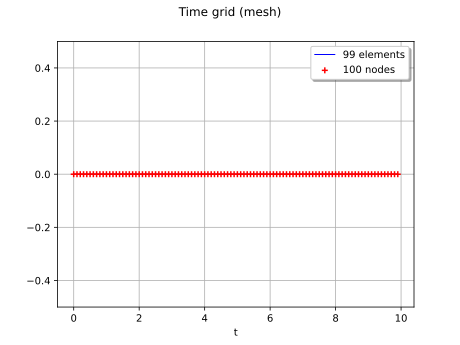
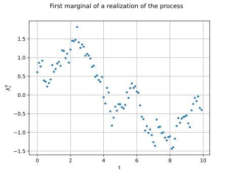
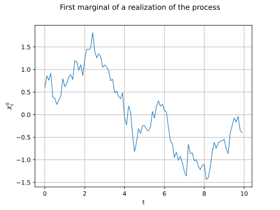
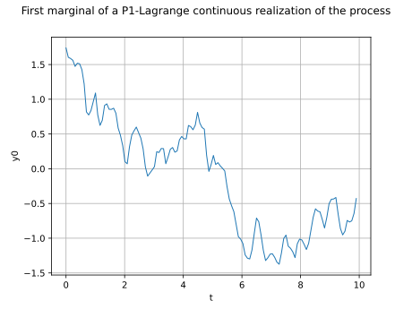
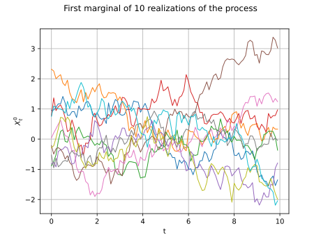

Note
Go to the end to download the full example code.
Manipulate stochastic processes¶
The objective here is to manipulate a multivariate stochastic process ![X: \Omega \times \mathcal{D} \rightarrow \mathbb{R}^d]() ,
where
,
where ![\mathcal{D} \in \mathbb{R}^n]() is discretized on the mesh
is discretized on the mesh ![\mathcal{M}]() and exhibit some of the services exposed by the
and exhibit some of the services exposed by the Process objects:
ask for the dimension, with the method
getOutputDimension();ask for the mesh, with the method
getMesh();ask for the mesh as regular 1-d mesh, with the
getTimeGrid()method ;ask for a realization, with the method the
getRealization()method ;ask for a continuous realization, with the
getContinuousRealization()method ;ask for a sample of realizations, with the
getSample()method ;ask for the normality of the process with the
isNormal()method ;ask for the stationarity of the process with the
isStationary()method.
import openturns as ot
import openturns.viewer as otv
We create a mesh -a time grid- which is a RegularGrid :
tMin = 0.0
timeStep = 0.1
n = 100
time_grid = ot.RegularGrid(tMin, timeStep, n)
time_grid.setName("time")
We create a Normal process ![X_t = (X_t^0, X_t^1, X_t^2)]() in dimension 3 with an exponential covariance model.
We define the amplitude and the scale of the
in dimension 3 with an exponential covariance model.
We define the amplitude and the scale of the ExponentialModel
scale = [4.0]
amplitude = [1.0, 2.0, 3.0]
We define a spatial correlation :
spatialCorrelation = ot.CorrelationMatrix(3)
spatialCorrelation[0, 1] = 0.8
spatialCorrelation[0, 2] = 0.6
spatialCorrelation[1, 2] = 0.1
The covariance model is now created with :
myCovarianceModel = ot.ExponentialModel(scale, amplitude, spatialCorrelation)
Eventually, the process is built with :
process = ot.GaussianProcess(myCovarianceModel, time_grid)
The dimension d of the process may be retrieved by
dim = process.getOutputDimension()
print("Dimension : %d" % dim)
Dimension : 3
The underlying mesh of the process is obtained with the getMesh method :
mesh = process.getMesh()
We have access to peculiar data of the mesh such as the corners :
minMesh = mesh.getVertices().getMin()[0]
maxMesh = mesh.getVertices().getMax()[0]
We draw it :
graph = mesh.draw()
graph.setTitle("Time grid (mesh)")
graph.setXTitle("t")
graph.setYTitle("")
view = otv.View(graph)

We can get the time grid of the process when the mesh can be interpreted as a regular time grid :
print(process.getTimeGrid())
RegularGrid(start=0, step=0.1, n=100)
A typical feature of a process is the generation of a realization of itself :
realization = process.getRealization()
Here it is a sample of size ![100 \times 4]() (100 time steps, 3 spatial cooordinates and the time variable).
We are able to draw its marginals, for instance the first (index 0) one
(100 time steps, 3 spatial cooordinates and the time variable).
We are able to draw its marginals, for instance the first (index 0) one ![X_t^0]() , against the time with no interpolation:
, against the time with no interpolation:
interpolate = False
graph = realization.drawMarginal(0, interpolate)
graph.setTitle("First marginal of a realization of the process")
graph.setXTitle("t")
graph.setYTitle(r"$X_t^0$")
view = otv.View(graph)

The same graph, but with interpolated values (default behaviour) :
graph = realization.drawMarginal(0)
graph.setTitle("First marginal of a realization of the process")
graph.setXTitle("t")
graph.setYTitle(r"$X_t^0$")
view = otv.View(graph)

We can build a function representing the process using P1-Lagrange interpolation (when not defined from a functional model).
continuousRealization = process.getContinuousRealization()
Once again we draw its first marginal :
marginal0 = continuousRealization.getMarginal(0)
graph = marginal0.draw(minMesh, maxMesh)
graph.setTitle("First marginal of a P1-Lagrange continuous realization of the process")
graph.setXTitle("t")
view = otv.View(graph)

Please note that the marginal0 object is a function. Consequently we can
evaluate it at any point of the domain, say ![t_0=3.5678]()
t0 = 3.5678
print(t0, marginal0([t0]))
3.5678 [0.295309]
Several realizations of the process may be determined at once :
number = 10
fieldSample = process.getSample(number)
Let us draw them the first marginal sphinx_gallery_thumbnail_number = 5
graph = fieldSample.drawMarginal(0, False)
graph.setTitle("First marginal of 10 realizations of the process")
graph.setXTitle("t")
graph.setYTitle(r"$X_t^0$")
view = otv.View(graph)

Same graph, but with interpolated values :
graph = fieldSample.drawMarginal(0)
graph.setTitle("First marginal of 10 realizations of the process")
graph.setXTitle("t")
graph.setYTitle(r"$X_t^0$")
view = otv.View(graph)

Miscellanies¶
We can extract any marginal of the process with the getMarginal method. Beware the numerotation begins at 0 ! It may be not implemented yet for some processes. The extracted marginal is a 1-d Gaussian process
print(process.getMarginal([1]))
GaussianProcess(trend=[x0]->[0], covariance=ExponentialModel(scale=[4], amplitude=[2], no spatial correlation))
If we extract simultaneously two indices we build a 2-d Gaussian process
print(process.getMarginal([0, 2]))
GaussianProcess(trend=[x0]->[0,0], covariance=ExponentialModel(scale=[4], amplitude=[1,3], spatial correlation=
[[ 1 0.6 ]
[ 0.6 1 ]]))
We can check whether the process is Gaussian or not
print("Is normal ? ", process.isNormal())
Is normal ? True
and the stationarity as well
print("Is stationary ? ", process.isStationary())
Is stationary ? True
Display all figures
otv.View.ShowAll()